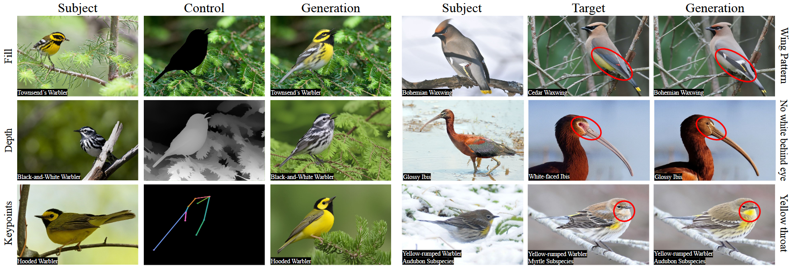

The Merlin L48 Spectrogram Dataset
|
 |
Abstract
Since the advent of controllable image generation, increasingly rich modes of control have enabled greater customization and accessibility for everyday users. Zero-shot, identity-preserving models such as Insert Anything and OminiControl now support applications like virtual try-on without requiring additional fine-tuning. While these models may be fitting for humans and rigid everyday objects, they still have limitations for non-rigid or fine-grained categories. These domains often lack accessible, high-quality data -- especially videos or multi-view observations of the same subject -- making them difficult both to evaluate and to improve upon. Yet, such domains are essential for moving beyond content creation toward applications that demand accuracy and fine detail. Birds are an excellent domain for this task: they exhibit high diversity, require fine-grained cues for identification, and come in a wide variety of poses. We introduce the NABirds Look-Alikes (NABLA) dataset, consisting of 4,759 expert-curated image pairs. Together with 1,073 pairs collected from multi-image observations on iNaturalist and a small set of videos, this forms a benchmark for evaluating identity-preserving generation of birds. We show that state-of-the-art baselines fail to maintain identity on this dataset, and we demonstrate that training on images grouped by species, age, and sex -- used as a proxy for identity -- substantially improves performance on both seen and unseen species.
Citation
@article{sun2025not,
title={Not All Birds Look The Same: Identity-Preserving Generation For Birds},
author={Sun, Aaron and Saha, Oindrila and Maji, Subhransu},
journal={arXiv preprint arXiv:2512.04485},
year={2025}
}